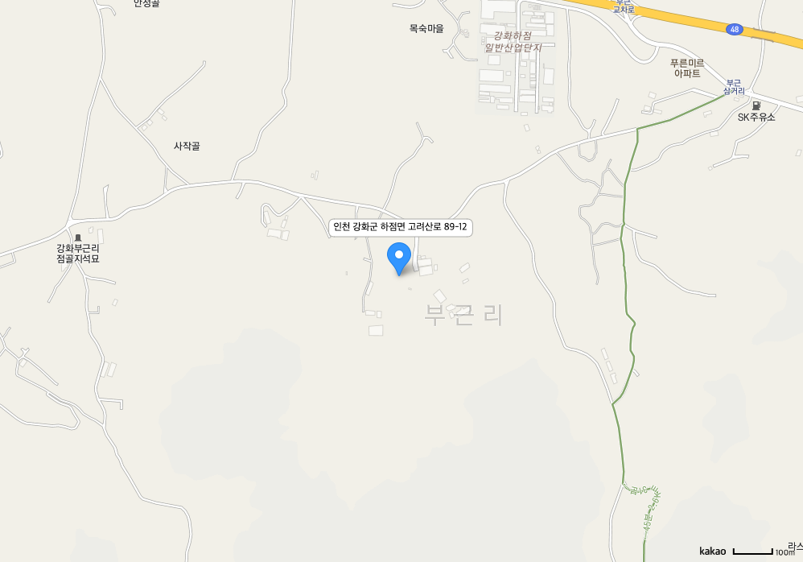

지킴이 위치 표시
이름 : 강경희
소속 : 낙동강유역한경청
관할지역 : (낙동강 하류) 서부권역 본류 1-3
단말기번호 : 101-42-6-2598
현재위치 : 경남 합천군 청덕면
보고시간 : 2020-04-10 17:04:13
선택 지킴이 위치 표시
지킴이 업무보고 표시
현재위치 : 경남 의령군 낙서면
단말상태 : 정상
보고시간 : 2020-04-10 17:04:13
보고내용 : 순찬 (보고 아이콘일 때)
근무지(경유지) 표시
지킴이 위치 표시 위치보고
지킴이 업무보고 표시 업무보고
근무지(경유지) 표시 경유지